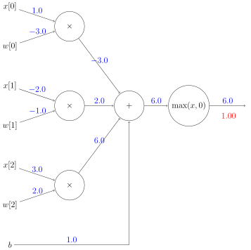
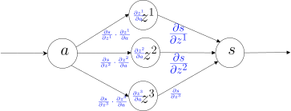
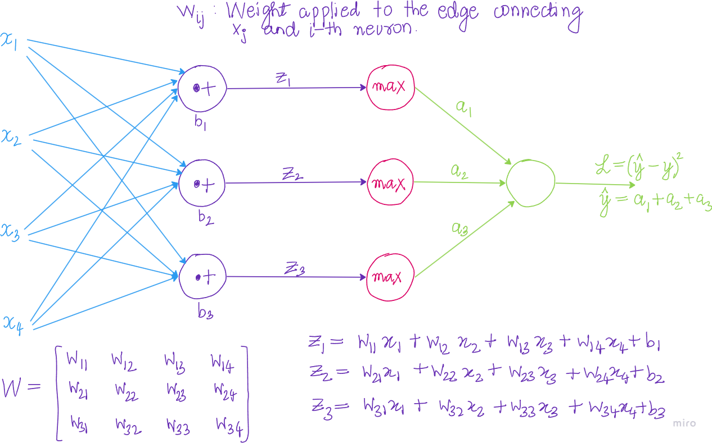

Calculating the network error with Loss
With a randomly initialized model, or even a model initialized with more sophisticated approaches, our goal is to train, or teach a model over time. To train a model, we tweak the weights and biases to improve the model’s accuracy and confidence. To do this, we calculate the error in our model. The loss function also referred to as the cost function quantifies the error.
Logit vector
Let \(\vec{l} = \mathbf{w}\cdot \mathbf{x} + \mathbf{b}\) be the result of the last dense layer of a neural network (the inner product between an input feature vector and the weights vector of the layer, added to the bias factor). This is commonly referred to as the logit vector in machine learning literature.
Entropy, Cross-Entropy and KL-Divergence
Let \(X\) be a random variable with possible outcomes \(\mathcal{X}\). Let \(P\) be the true probability distribution of \(X\) with probability mass function \(p(x)\). Let \(Q\) be an approximating distribution with probability mass function \(q(x)\).
Definition. The entropy of \(P\) is defined as:
\[\begin{align*} H(P) = -\sum_{x\in\mathcal{X}} p(x) \cdot \log p(x) \end{align*}\]
In information theory, entropy is the measure of uncertainty, surprise of a system. By taking the logarithm \(\log p(x)\), we concentrate on the order of the surprise. Entropy, then, is an expectation over the uncertainties or the expected surprise.
Definition. The cross-entropy of \(Q\) relative to \(P\) is defined as:
\[\begin{align*} H(P,Q) = -\sum_{x\in\mathcal{X}} p(x) \cdot \log q(x) \end{align*}\]
Definition. For discrete distributions \(P\) and \(Q\) defined on the sample space \(\mathcal{X}\), the Kullback-Leibler(KL) divergence (or relative entropy) from \(Q\) to \(P\) is defined as:
\[\begin{align*} D_{KL}(P||Q) = -\sum_{x\in\mathcal{X}} p(x) \cdot \log \frac{p(x)}{q(x)} \end{align*}\]
Intuitively, it is the expected excess surprise from using \(Q\) as a model instead of \(P\), when the actual distribution is \(P\). Note that, \(D_{KL}(P||Q) \neq D_{KL}(Q||P)\), so it is not symmetric and hence it is not a norm.
Categorical cross-entropy loss function
We are going to work on a multi-class classification problem.
For any input \(\mathbf{x}_i\), the target vector \(\mathbf{y}_i\) could be specified using one-hot encoding or an integer in the range [0,numClasses).
Let’s say, we have numClasses = 3.
In one-hot encoding, the target vector y_true is an array like [1, 0, 0], [0, 1, 0], or [0, 0, 1]. The category/class is determined by the index which is hot. For example, if y_true equals [0, 1, 0], then the sample belongs to class \(1\), whilst if y_true equals [0, 0, 1], the sample belongs to class \(2\).
In integer encoding, the target vector y_true is an integer. For example, if y_true equals \(1\), the sample belongs to class \(1\), whilst if y_true equals \(2\), the sample belongs to class \(2\).
The categorical_crossentropy is defined as:
\[\begin{align*} L_i = -\sum_{j} y_{i,j} \log(\hat{y}_{i,j}) \end{align*}\]
Assume that we have a softmax output \(\hat{\mathbf{y}}_i\), [0.7, 0.1, 0.2] and target vector \(\mathbf{y}_i\) [1, 0, 0]. Then, we can compute the categorical cross entropy loss as:
\[\begin{align*} -\left(1\cdot \log (0.7) + 0 \cdot \log (0.1) + 0 \cdot \log(0.2)\right) = 0.35667494 \end{align*}\]
Let’s that we have a batch of \(3\) samples. Additionally, suppose the target y_true is integer encoded. After running through the softmax activation function, the network’s output layer yields:
With a collection of softmax outputs and their intended targets, we can map these indices to retrieve the predicted probabilities of the true class labels:
This can be simplified.
numpy lets us index an 2D-array in multiple ways. One of them is to use a list filled with row indices and a list with column indices. We could, thus, write:
The categorical cross-entropy loss for each of the samples is:
Finally, we want an average loss for the entire batch, to have an idea about how our model is doing during the training phase. Therefore, we have:
neg_log = -np.log(y_pred[range(len(y_pred)),y_true])
average_loss = np.mean(neg_log)
print(average_loss)1.191850256268978In the case, that the targets are one-hot encoded, we need to handle this case a bit differently. If y_true.shape has \(2\) dimensions, then it implies, we have a set of one-hot encoded vectors. On the other hand, if y_true is a list, that is y_true.shape has \(1\) dimension, then it means, we have sparse labels/integer encoding.
import numpy as np
y_pred = np.array(
[
[0.7, 0.1, 0.2],
[0.1, 0.5, 0.4],
[0.02, 0.9, 0.08]
]
)
y_true = np.array(
[
[1, 0, 0],
[0, 1, 0],
[0, 0, 1]
]
)
correct_confidences = np.array([])
# If categorical labels
if(len(y_pred.shape) == 1):
correct_confidences = y_pred[range(len(y_pred)), y_true]
elif(len(y_pred.shape)==2):
correct_confidences = np.sum(y_pred * y_true, axis=1)
neg_log = -np.log(correct_confidences)
average_loss = np.mean(neg_log)
print(average_loss)1.191850256268978If the neural network output y_pred for some reason is the vector [1, 0, 0], this would result in numpy.log function returning a negative infinity. To avoid such situations, it’s safer to apply a ceil and floor to y_pred.
Categorical Cross-Entropy Loss Class
I first create an abstract base class Loss. Every Loss object exposes the calculate method which in turn calls Loss object’s forward method to compute the log-loss for each sample and then takes an average of the sample losses.
CategoricalCrossEntropyLoss class is a child class of Loss and provides an implementation of the forward method.
import numpy as np
import nnfs
from nnfs.datasets import spiral_data
from abc import abstractmethod
# Abstract base class for losses
class Loss:
@abstractmethod
def forward(self, y_pred, y_true):
pass
@abstractmethod
def backward(self, y_pred, y_true):
pass
# Calculates the data and regularization losses
# given model output and ground truth values
def calculate(self, output, y):
# Calculate the sample losses
sample_losses = self.forward(output, y)
# Calculate the mean loss
data_loss = np.mean(sample_losses)
# Return loss
return data_loss
# Cross-Entropy loss
class CategoricalCrossEntropyLoss(Loss):
# Forward pass
def forward(self, y_pred, y_true):
num_samples = len(y_pred)
# Clip data to prevent division by 0
# Clip both sides to not drag mean towards any value
epsilon = 1e-7
y_pred_clipped = np.clip(y_pred, epsilon, 1 - epsilon)
# If categorical labels
if len(y_pred.shape) == 1:
correct_confidences = y_pred[range(len(y_pred)), y_true]
# else if one-hot encoding
elif len(y_pred.shape) == 2:
correct_confidences = np.sum(y_pred * y_true, axis=1)
neg_log = -np.log(correct_confidences)
return neg_logUsing the manual created outputs and targets, we have:
Backpropogation
Backpropogation consists going backwards along the edges and passing along gradients. We are going to chop up a neuron into it’s elementary operations and draw a computational graph. Each node in the graph receives an upstream gradient. The goal is pass on the correct downstream gradient.
Each node has a local gradient - the gradient of it’s output with respect to it’s input. Consider a node receiving an input \(z\) and producing an output \(h=f(z)\). Then, we have:
Show the code
%%itikz --temp-dir --tex-packages=tikz --tikz-libraries=arrows --implicit-standalone
\begin{tikzpicture}
\node [circle,minimum size=40mm,draw] (f) at (0,0) {\huge $f$};
\node [blue] (localgrad) at (-1,0) {\huge $\frac{\partial h}{\partial z}$};
\node [blue] (lgrad) at (0.0,1) {\large Local gradient};
\draw [->, shorten >=1pt] (1.80,1) -- node [above,midway] {\huge $h$} (5,1);
\draw [->, shorten >=1pt] (5,-1) -- node [below,midway] {\huge $\frac{\partial s}{\partial h}$} (1.80,-1);
\node [] (upgrad) at (4.0,-3) {\huge Upstream gradient};
\draw [->, shorten >=1pt] (-5,1) -- node [above,midway] {\huge $z$} (-1.80,1);
\draw [->, shorten >=1pt] (-1.80,-1) -- node [below,midway] {\huge $\frac{\partial s}{\partial z} = \frac{\partial s}{\partial h} \cdot \frac{\partial h}{\partial z}$} (-5,-1);
\node [] (downgrad) at (-4.0,-3) {\huge Downstream gradient};
\end{tikzpicture}The downstream gradient \(\frac{\partial s}{\partial z}\) equals the upstream graient \(\frac{\partial s}{\partial h}\) times the local gradient \(\frac{\partial h}{\partial z}\).
What about nodes with multiple inputs? Say that, \(h=f(x,y)\). Multiple inputs imply multiple local gradients.
Show the code
%%itikz --temp-dir --tex-packages=tikz --tikz-libraries=arrows --implicit-standalone
\begin{tikzpicture}[x=0.75pt,y=0.75pt,yscale=-1,scale=1.75]
%uncomment if require: \path (0,216); %set diagram left start at 0, and has height of 216
%Shape: Circle [id:dp08328772161506959]
\draw (302.75,83.38) .. controls (302.75,53.62) and (326.87,29.5) .. (356.63,29.5) .. controls (386.38,29.5) and (410.5,53.62) .. (410.5,83.38) .. controls (410.5,113.13) and (386.38,137.25) .. (356.63,137.25) .. controls (326.87,137.25) and (302.75,113.13) .. (302.75,83.38) -- cycle ;
%Straight Lines [id:da2730189357413113]
\draw (406,59.38) -- (513.5,59.74) ;
\draw [shift={(515.5,59.75)}, rotate = 180.2] [color={rgb, 255:red, 0; green, 0; blue, 0 } ][line width=0.75] (10.93,-3.29) .. controls (6.95,-1.4) and (3.31,-0.3) .. (0,0) .. controls (3.31,0.3) and (6.95,1.4) .. (10.93,3.29) ;
%Straight Lines [id:da21080101466010737]
\draw (515,110.75) -- (405,110.26) ;
\draw [shift={(403,110.25)}, rotate = 0.26] [color={rgb, 255:red, 0; green, 0; blue, 0 } ][line width=0.75] (10.93,-3.29) .. controls (6.95,-1.4) and (3.31,-0.3) .. (0,0) .. controls (3.31,0.3) and (6.95,1.4) .. (10.93,3.29) ;
%Straight Lines [id:da05192158713361961]
\draw (209,1.75) -- (309.71,51.37) ;
\draw [shift={(311.5,52.25)}, rotate = 206.23] [color={rgb, 255:red, 0; green, 0; blue, 0 } ][line width=0.75] (10.93,-3.29) .. controls (6.95,-1.4) and (3.31,-0.3) .. (0,0) .. controls (3.31,0.3) and (6.95,1.4) .. (10.93,3.29) ;
%Straight Lines [id:da3568530309648137]
\draw (305,68.25) -- (204.31,20.61) ;
\draw [shift={(202.5,19.75)}, rotate = 25.32] [color={rgb, 255:red, 0; green, 0; blue, 0 } ][line width=0.75] (10.93,-3.29) .. controls (6.95,-1.4) and (3.31,-0.3) .. (0,0) .. controls (3.31,0.3) and (6.95,1.4) .. (10.93,3.29) ;
%Straight Lines [id:da4437541566257528]
\draw (205,167.25) -- (311.2,116.12) ;
\draw [shift={(313,115.25)}, rotate = 154.29] [color={rgb, 255:red, 0; green, 0; blue, 0 } ][line width=0.75] (10.93,-3.29) .. controls (6.95,-1.4) and (3.31,-0.3) .. (0,0) .. controls (3.31,0.3) and (6.95,1.4) .. (10.93,3.29) ;
%Straight Lines [id:da2672766038605987]
\draw (304.5,101.75) -- (205.82,146.92) ;
\draw [shift={(204,147.75)}, rotate = 335.41] [color={rgb, 255:red, 0; green, 0; blue, 0 } ][line width=0.75] (10.93,-3.29) .. controls (6.95,-1.4) and (3.31,-0.3) .. (0,0) .. controls (3.31,0.3) and (6.95,1.4) .. (10.93,3.29) ;
% Text Node
\draw (352,76.4) node [anchor=north west][inner sep=0.75pt] {\huge $f$};
% Text Node
\draw (318.5,44.4) node [anchor=north west][inner sep=0.75pt] [font=\small,color={rgb, 255:red, 0; green, 28; blue, 247 } ,opacity=1 ] {\huge $\frac{\partial h}{\partial x}$};
% Text Node
\draw (318.5,88.9) node [anchor=north west][inner sep=0.75pt] [font=\small,color={rgb, 255:red, 0; green, 36; blue, 255 } ,opacity=1 ] {\huge $\frac{\partial h}{\partial y}$};
% Text Node
\draw (258.5,7.4) node [anchor=north west][inner sep=0.75pt] {\huge $x$};
% Text Node
\draw (264,136.9) node [anchor=north west][inner sep=0.75pt] {\huge $y$};
% Text Node
\draw (151.5,96.9) node [anchor=north west][inner sep=0.75pt] [font=\small,color={rgb, 255:red, 0; green, 28; blue, 247 } ,opacity=1 ] {\huge $\frac{\partial s}{\partial y} =\frac{\partial s}{\partial h} \cdot \frac{\partial h}{\partial y}$};
% Text Node
\draw (150,33.4) node [anchor=north west][inner sep=0.75pt] [font=\small,color={rgb, 255:red, 0; green, 28; blue, 247 } ,opacity=1 ] {\huge $\frac{\partial s}{\partial x} =\frac{\partial s}{\partial h} \cdot \frac{\partial h}{\partial x}$};
% Text Node
\draw (322.5,4.9) node [anchor=north west][inner sep=0.75pt] {\huge $h=f(x,y)$};
% Text Node
\draw (449.5,39.9) node [anchor=north west][inner sep=0.75pt] {\huge $h$};
% Text Node
\draw (451.5,112.9) node [anchor=north west][inner sep=0.75pt] {\huge $\frac{\partial s}{\partial h}$};
% Text Node
\draw (164.5,172.9) node [anchor=north west][inner sep=0.75pt] {\huge $ \begin{array}{l}
Downstream\ \\
gradients
\end{array}$};
% Text Node
\draw (430.5,175.4) node [anchor=north west][inner sep=0.75pt] {\huge $ \begin{array}{l}
Upstream\ \\
gradients
\end{array}$};
% Text Node
\draw (318.5,173.9) node [anchor=north west][inner sep=0.75pt] [color={rgb, 255:red, 3; green, 50; blue, 255 } ,opacity=1 ] {\huge $ \begin{array}{l}
Local\ \\
gradients
\end{array}$};
\end{tikzpicture}
Let’s start with a simple forward pass with \(1\) neuron. Let’s say, we have the following input vector, weights and bias:
Show the code
%%itikz --temp-dir --tex-packages=tikz --tikz-libraries=arrows --implicit-standalone
\begin{tikzpicture}
\foreach \i in {0,...,2}
{
\node[] (Input-\i) at (0,-\i * 4) {\large $x[\i]$};
}
\foreach \i in {0,...,2}
{
\node[] (Weight-\i) at (0,-\i * 4-2) {\large $w[\i]$};
}
\foreach \i in {0,...,2}
{
\node[circle,
minimum size = 15mm,
draw,
] (Mult-\i) at (3.0,-\i * 4 - 1) {\large $\times$};
}
\node [] (bias) at (0,-12) {\large $b$};
\node [circle,minimum size=15mm,draw] (Add) at (6,-5) {\large +};
\node [circle,minimum size=15mm,draw] (ReLU) at (9,-5) {\large $\max(x,0)$};
\node [] (NextLayer) at (12,-5) {};
\draw[->, shorten >=1pt] (Input-0) -- node[midway,above,blue] {\large $1.0$} (Mult-0);
\draw[->, shorten >=1pt] (Weight-0) -- node[midway,above,blue] {\large $-3.0$} (Mult-0);
\draw[->, shorten >=1pt] (Input-1) -- node[midway,above,blue] {\large $-2.0$}(Mult-1);
\draw[->, shorten >=1pt] (Weight-1) -- node[midway,above,blue] {\large $-1.0$}(Mult-1);
\draw[->, shorten >=1pt] (Input-2) -- node[midway,above,blue] {\large $3.0$}(Mult-2);
\draw[->, shorten >=1pt] (Weight-2) -- node[midway,above,blue] {\large $2.0$}(Mult-2);
\draw (bias) -- node[midway,above,blue] {\large $1.0$}(6,-12);
\draw[->, shorten >=1pt] (6,-12) -- (Add);
\draw[->, shorten >=1pt] (Mult-0) -- node[midway,above,blue] {\large $-3.0$}(Add);
\draw[->, shorten >=1pt] (Mult-1) -- node[midway,above,blue] {\large $2.0$}(Add);
\draw[->, shorten >=1pt] (Mult-2) -- node[midway,above,blue] {\large $6.0$}(Add);
\draw[->, shorten >=1pt] (Add) -- node[midway,above,blue] {\large $6.0$}(ReLU);
\draw[->, shorten >=1pt] (ReLU) -- node[midway,above,blue] {\large $6.0$}(NextLayer);
\node [red] (A) at (11,-5.5) {\large $1.00$};
\end{tikzpicture}
The ReLU function \(f(x)=\max(x,0)\) is differentiable everywhere except at \(x = 0\). We define \(f'(x)\) as:
\[\begin{align*} f'(x) = \begin{cases} 1 & x > 0 \\ 0 & \text{otherwise} \end{cases} \end{align*}\]
In Python, we write:
The input to the ReLU function is \(6.00\), so the derivative equals \(1.00\). We multiply this local gradient by the upstream gradient to calculate the downstream gradient.
import numpy as np
x = [1.0, -2.0, 3.0] # input values
w = [-3.0, -1.0, 2.0] # weights
b = 1.0
# Forward pass
z = np.dot(x, w) + b
# ReLU Activation function
y = max(z, 0)
# Backward pass
# Upstream gradient
ds_drelu = 1.0
# Derivative of the ReLU and the chain rule
drelu_dz = 1.0 if z > 0 else 0.0
ds_dz = ds_drelu * drelu_dz
print(ds_dz)1.0The results with the derivative of the ReLU function and chain rule look as follows:
Show the code
%%itikz --temp-dir --tex-packages=tikz --tikz-libraries=arrows --implicit-standalone
\begin{tikzpicture}
\foreach \i in {0,...,2}
{
\node[] (Input-\i) at (0,-\i * 4) {\large $x[\i]$};
}
\foreach \i in {0,...,2}
{
\node[] (Weight-\i) at (0,-\i * 4-2) {\large $w[\i]$};
}
\foreach \i in {0,...,2}
{
\node[circle,
minimum size = 15mm,
draw,
] (Mult-\i) at (3.0,-\i * 4 - 1) {\large $\times$};
}
\node [] (bias) at (0,-12) {\large $b$};
\node [circle,minimum size=15mm,draw] (Add) at (6,-5) {\large +};
\node [circle,minimum size=15mm,draw] (ReLU) at (9,-5) {\large $\max(x,0)$};
\node [] (NextLayer) at (12,-5) {};
\draw[->, shorten >=1pt] (Input-0) -- node[midway,above,blue] {\large $1.0$} (Mult-0);
\draw[->, shorten >=1pt] (Weight-0) -- node[midway,above,blue] {\large $-3.0$} (Mult-0);
\draw[->, shorten >=1pt] (Input-1) -- node[midway,above,blue] {\large $-2.0$}(Mult-1);
\draw[->, shorten >=1pt] (Weight-1) -- node[midway,above,blue] {\large $-1.0$}(Mult-1);
\draw[->, shorten >=1pt] (Input-2) -- node[midway,above,blue] {\large $3.0$}(Mult-2);
\draw[->, shorten >=1pt] (Weight-2) -- node[midway,above,blue] {\large $2.0$}(Mult-2);
\draw (bias) -- node[midway,above,blue] {\large $1.0$}(6,-12);
\draw[->, shorten >=1pt] (6,-12) -- (Add);
\draw[->, shorten >=1pt] (Mult-0) -- node[midway,above,blue] {\large $-3.0$}(Add);
\draw[->, shorten >=1pt] (Mult-1) -- node[midway,above,blue] {\large $2.0$}(Add);
\draw[->, shorten >=1pt] (Mult-2) -- node[midway,above,blue] {\large $6.0$}(Add);
\draw[->, shorten >=1pt] (Add) -- node[midway,above,blue] {\large $6.0$}(ReLU);
\draw[->, shorten >=1pt] (ReLU) -- node[midway,above,blue] {\large $6.0$}(NextLayer);
\node [red] (A) at (11,-5.5) {\large $1.00$};
\node [red] (B) at (7,-5.5) {\large $1.00$};
\end{tikzpicture}
Moving backward through our neural network, consider the add function \(f(x,y,z)=x + y + z\). The partial derivatives \(\frac{\partial f}{\partial x}\), \(\frac{\partial f}{\partial y}\) and \(\frac{\partial f}{\partial z}\) are all equal to \(1\). So, the add gate always takes on the gradient on its output and distributes it equally to all of its inputs, regardless of what their values were during the forward pass.
# Local gradients for the + function
dz_dw0x0 = 1
dz_dw1x1 = 1
dz_dw2x2 = 1
dz_db = 1
# Calculate the downstream gradients
ds_dw0x0 = ds_dz * dz_dw0x0
ds_dw1x1 = ds_dz * dz_dw1x1
ds_dw2x2 = ds_dz * dz_dw2x2
ds_db = ds_dz * dz_db
print(ds_dw0x0, ds_dw1x1, ds_dw2x2, ds_db)1.0 1.0 1.0 1.0We can update the computation graph as:
Show the code
%%itikz --temp-dir --tex-packages=tikz --tikz-libraries=arrows --implicit-standalone
\begin{tikzpicture}
\foreach \i in {0,...,2}
{
\node[] (Input-\i) at (0,-\i * 4) {\large $x[\i]$};
}
\foreach \i in {0,...,2}
{
\node[] (Weight-\i) at (0,-\i * 4-2) {\large $w[\i]$};
}
\foreach \i in {0,...,2}
{
\node[circle,
minimum size = 15mm,
draw,
] (Mult-\i) at (3.0,-\i * 4 - 1) {\large $\times$};
}
\node [] (bias) at (0,-12) {\large $b$};
\node [circle,minimum size=15mm,draw] (Add) at (6,-5) {\large +};
\node [circle,minimum size=15mm,draw] (ReLU) at (9,-5) {\large $\max(x,0)$};
\node [] (NextLayer) at (12,-5) {};
\draw[->, shorten >=1pt] (Input-0) -- node[midway,above,blue] {\large $1.0$} (Mult-0);
\draw[->, shorten >=1pt] (Weight-0) -- node[midway,above,blue] {\large $-3.0$} (Mult-0);
\draw[->, shorten >=1pt] (Input-1) -- node[midway,above,blue] {\large $-2.0$}(Mult-1);
\draw[->, shorten >=1pt] (Weight-1) -- node[midway,above,blue] {\large $-1.0$}(Mult-1);
\draw[->, shorten >=1pt] (Input-2) -- node[midway,above,blue] {\large $3.0$}(Mult-2);
\draw[->, shorten >=1pt] (Weight-2) -- node[midway,above,blue] {\large $2.0$}(Mult-2);
\draw (bias) -- node[midway,above,blue] {\large $1.0$}(6,-12);
\draw[->, shorten >=1pt] (6,-12) -- (Add);
\draw[->, shorten >=1pt] (Mult-0) -- node[midway,above,blue] {\large $-3.0$}(Add);
\draw[->, shorten >=1pt] (Mult-1) -- node[midway,above,blue] {\large $2.0$}(Add);
\draw[->, shorten >=1pt] (Mult-2) -- node[midway,above,blue] {\large $6.0$}(Add);
\draw[->, shorten >=1pt] (Add) -- node[midway,above,blue] {\large $6.0$}(ReLU);
\draw[->, shorten >=1pt] (ReLU) -- node[midway,above,blue] {\large $6.0$}(NextLayer);
\node [red] (A) at (11,-5.5) {\large $1.00$};
\node [red] (B) at (7,-5.5) {\large $1.00$};
\node [red] (C) at (5,-3.5) {\large $1.00$};
\node [red] (D) at (5,-5.5) {\large $1.00$};
\node [red] (E) at (5,-7.5) {\large $1.00$};
\node [red] (f) at (5,-12.5) {\large $1.00$};
\end{tikzpicture}
Now, consider the production function \(f(x,y) = x * y\). The gradients of \(f\) are \(\frac{\partial f}{\partial x} = y\), \(\frac{\partial f}{\partial y} = x\). The multiply gate is therefore a little less easy to interpret. Its local gradients are the input values, except switched and this is multiplied by the upstream gradient.
# Local gradients for the * function
dw0x0_dx0 = w[0]
dw0x0_dw0 = x[0]
dw1x1_dx1 = w[1]
dw1x1_dw1 = x[1]
dw2x2_dx2 = w[2]
dw2x2_dw2 = x[2]
# Calculate the downstream gradients
ds_dx0 = ds_dw0x0 * dw0x0_dx0
ds_dw0 = ds_dw0x0 * dw0x0_dw0
ds_dx1 = ds_dw1x1 * dw1x1_dx1
ds_dw1 = ds_dw1x1 * dw1x1_dw1
ds_dx2 = ds_dw2x2 * dw2x2_dx2
ds_dw2 = ds_dw2x2 * dw2x2_dw2
print(ds_dx0, ds_dw0, ds_dx1, ds_dw1, ds_dx2, ds_dw2)-3.0 1.0 -1.0 -2.0 2.0 3.0We can update the computation graph as follows:
Show the code
%%itikz --temp-dir --tex-packages=tikz --tikz-libraries=arrows --implicit-standalone
\begin{tikzpicture}
\foreach \i in {0,...,2}
{
\node[] (Input-\i) at (0,-\i * 4) {\large $x[\i]$};
}
\foreach \i in {0,...,2}
{
\node[] (Weight-\i) at (0,-\i * 4-2) {\large $w[\i]$};
}
\foreach \i in {0,...,2}
{
\node[circle,
minimum size = 15mm,
draw,
] (Mult-\i) at (3.0,-\i * 4 - 1) {\large $\times$};
}
\node [] (bias) at (0,-12) {\large $b$};
\node [circle,minimum size=15mm,draw] (Add) at (6,-5) {\large +};
\node [circle,minimum size=15mm,draw] (ReLU) at (9,-5) {\large $\max(x,0)$};
\node [] (NextLayer) at (12,-5) {};
\draw[->, shorten >=1pt] (Input-0) -- node[midway,above,blue] {\large $1.0$} (Mult-0);
\draw[->, shorten >=1pt] (Weight-0) -- node[midway,above,blue] {\large $-3.0$} (Mult-0);
\draw[->, shorten >=1pt] (Input-1) -- node[midway,above,blue] {\large $-2.0$}(Mult-1);
\draw[->, shorten >=1pt] (Weight-1) -- node[midway,above,blue] {\large $-1.0$}(Mult-1);
\draw[->, shorten >=1pt] (Input-2) -- node[midway,above,blue] {\large $3.0$}(Mult-2);
\draw[->, shorten >=1pt] (Weight-2) -- node[midway,above,blue] {\large $2.0$}(Mult-2);
\draw (bias) -- node[midway,above,blue] {\large $1.0$}(6,-12);
\draw[->, shorten >=1pt] (6,-12) -- (Add);
\draw[->, shorten >=1pt] (Mult-0) -- node[midway,above,blue] {\large $-3.0$}(Add);
\draw[->, shorten >=1pt] (Mult-1) -- node[midway,above,blue] {\large $2.0$}(Add);
\draw[->, shorten >=1pt] (Mult-2) -- node[midway,above,blue] {\large $6.0$}(Add);
\draw[->, shorten >=1pt] (Add) -- node[midway,above,blue] {\large $6.0$}(ReLU);
\draw[->, shorten >=1pt] (ReLU) -- node[midway,above,blue] {\large $6.0$}(NextLayer);
\node [red] (A) at (11,-5.5) {\large $1.00$};
\node [red] (B) at (7,-5.5) {\large $1.00$};
\node [red] (C) at (5,-3.5) {\large $1.00$};
\node [red] (D) at (5,-5.5) {\large $1.00$};
\node [red] (E) at (5,-7.5) {\large $1.00$};
\node [red] (F) at (5,-12.5) {\large $1.00$};
\node [red] (G) at (1,-0.75) {\large $-3.0$};
\node [red] (H) at (1,-2) {\large $1.0$};
\node [red] (I) at (1,-4.75) {\large $-1.0$};
\node [red] (J) at (1,-6) {\large $-2.0$};
\node [red] (K) at (1,-8.75) {\large $2.0$};
\node [red] (L) at (1,-10) {\large $3.0$};
\end{tikzpicture}
Gradients sum at outward branches. Consider the following computation graph:
Show the code
%%itikz --temp-dir --tex-packages=tikz --tikz-libraries=arrows --implicit-standalone
\begin{tikzpicture}[x=0.75pt,y=0.75pt,yscale=-1,xscale=1]
%uncomment if require: \path (0,211); %set diagram left start at 0, and has height of 211
%Shape: Ellipse [id:dp4612472925724298]
\draw (444.62,95) .. controls (444.62,81.19) and (455.38,70) .. (468.64,70) .. controls (481.91,70) and (492.66,81.19) .. (492.66,95) .. controls (492.66,108.81) and (481.91,120) .. (468.64,120) .. controls (455.38,120) and (444.62,108.81) .. (444.62,95) -- cycle ;
%Shape: Ellipse [id:dp4844626229099638]
\draw (299.33,31.5) .. controls (299.33,17.69) and (310.08,6.5) .. (323.35,6.5) .. controls (336.61,6.5) and (347.37,17.69) .. (347.37,31.5) .. controls (347.37,45.31) and (336.61,56.5) .. (323.35,56.5) .. controls (310.08,56.5) and (299.33,45.31) .. (299.33,31.5) -- cycle ;
%Shape: Ellipse [id:dp2271780920027553]
\draw (303.25,94.7) .. controls (303.25,80.89) and (314,69.7) .. (327.27,69.7) .. controls (340.53,69.7) and (351.29,80.89) .. (351.29,94.7) .. controls (351.29,108.51) and (340.53,119.7) .. (327.27,119.7) .. controls (314,119.7) and (303.25,108.51) .. (303.25,94.7) -- cycle ;
%Shape: Ellipse [id:dp150108609534231]
\draw (299.25,167.7) .. controls (299.25,153.89) and (310,142.7) .. (323.27,142.7) .. controls (336.53,142.7) and (347.29,153.89) .. (347.29,167.7) .. controls (347.29,181.51) and (336.53,192.7) .. (323.27,192.7) .. controls (310,192.7) and (299.25,181.51) .. (299.25,167.7) -- cycle ;
%Straight Lines [id:da7844123205705824]
\draw (347.37,31.5) -- (450.04,76.06) ;
\draw [shift={(452.79,77.25)}, rotate = 203.46] [fill={rgb, 255:red, 0; green, 0; blue, 0 } ][line width=0.08] [draw opacity=0] (6.25,-3) -- (0,0) -- (6.25,3) -- cycle ;
%Straight Lines [id:da814168086414518]
\draw (351.29,94.7) -- (441.62,94.99) ;
\draw [shift={(444.62,95)}, rotate = 180.18] [fill={rgb, 255:red, 0; green, 0; blue, 0 } ][line width=0.08] [draw opacity=0] (6.25,-3) -- (0,0) -- (6.25,3) -- cycle ;
%Straight Lines [id:da7411937688169676]
\draw (347.29,167.7) -- (446.35,110.75) ;
\draw [shift={(448.95,109.25)}, rotate = 150.1] [fill={rgb, 255:red, 0; green, 0; blue, 0 } ][line width=0.08] [draw opacity=0] (6.25,-3) -- (0,0) -- (6.25,3) -- cycle ;
%Shape: Circle [id:dp515320046458885]
\draw (163,96) .. controls (163,82.19) and (174.19,71) .. (188,71) .. controls (201.81,71) and (213,82.19) .. (213,96) .. controls (213,109.81) and (201.81,121) .. (188,121) .. controls (174.19,121) and (163,109.81) .. (163,96) -- cycle ;
%Straight Lines [id:da6219161786925074]
\draw (492.66,95) -- (567,94.52) ;
\draw [shift={(570,94.5)}, rotate = 179.63] [fill={rgb, 255:red, 0; green, 0; blue, 0 } ][line width=0.08] [draw opacity=0] (6.25,-3) -- (0,0) -- (6.25,3) -- cycle ;
%Straight Lines [id:da5694521418691749]
\draw (84.5,95.75) -- (160,95.99) ;
\draw [shift={(163,96)}, rotate = 180.18] [fill={rgb, 255:red, 0; green, 0; blue, 0 } ][line width=0.08] [draw opacity=0] (8.04,-3.86) -- (0,0) -- (8.04,3.86) -- (5.34,0) -- cycle ;
%Straight Lines [id:da08990804845355682]
\draw (210.69,85.5) -- (296.86,31.4) ;
\draw [shift={(299.4,29.8)}, rotate = 147.88] [fill={rgb, 255:red, 0; green, 0; blue, 0 } ][line width=0.08] [draw opacity=0] (6.25,-3) -- (0,0) -- (6.25,3) -- cycle ;
%Straight Lines [id:da1505672958459916]
\draw (212.61,96) -- (300.4,95.03) ;
\draw [shift={(303.4,95)}, rotate = 179.37] [fill={rgb, 255:red, 0; green, 0; blue, 0 } ][line width=0.08] [draw opacity=0] (6.25,-3) -- (0,0) -- (6.25,3) -- cycle ;
%Straight Lines [id:da23258128449735227]
\draw (203,116.5) -- (296.36,167.17) ;
\draw [shift={(299,168.6)}, rotate = 208.49] [fill={rgb, 255:red, 0; green, 0; blue, 0 } ][line width=0.08] [draw opacity=0] (6.25,-3) -- (0,0) -- (6.25,3) -- cycle ;
% Text Node
\draw (464.08,84.4) node [anchor=north west][inner sep=0.75pt] {\huge $s$};
% Text Node
\draw (317.25,18.9) node [anchor=north west][inner sep=0.75pt] {\huge $z^{1}$};
% Text Node
\draw (321.65,82.6) node [anchor=north west][inner sep=0.75pt] {\huge $z^{2}$};
% Text Node
\draw (317.65,155.6) node [anchor=north west][inner sep=0.75pt] {\huge $z^{3}$};
% Text Node
\draw (365.04,44.2) node [anchor=north west][inner sep=0.75pt] [color={rgb, 255:red, 0; green, 13; blue, 247 } ,opacity=1 ] {\huge $\frac{\partial s}{\partial z^{1}}$};
% Text Node
\draw (365.52,94.3) node [anchor=north west][inner sep=0.75pt] [color={rgb, 255:red, 0; green, 13; blue, 247 } ,opacity=1 ] {\huge $\frac{\partial s}{\partial z^{2}}$};
% Text Node
\draw (366.72,154) node [anchor=north west][inner sep=0.75pt] [color={rgb, 255:red, 0; green, 13; blue, 247 } ,opacity=1 ] {\huge $\frac{\partial s}{\partial z^{3}}$};
% Text Node
\draw (183.5,85.4) node [anchor=north west][inner sep=0.75pt] {\huge $a$};
% Text Node
\draw (304.78,21.4) node [anchor=north west][inner sep=0.75pt] [font=\tiny,color={rgb, 255:red, 0; green, 13; blue, 247 } ,opacity=1 ] {\normalsize $\frac{\partial z^{1}}{\partial a}$};
% Text Node
\draw (305.82,84.6) node [anchor=north west][inner sep=0.75pt] [font=\tiny,color={rgb, 255:red, 0; green, 13; blue, 247 } ,opacity=1 ] {\normalsize $\frac{\partial z^{2}}{\partial a}$};
% Text Node
\draw (303.26,156.6) node [anchor=north west][inner sep=0.75pt] [font=\tiny,color={rgb, 255:red, 0; green, 13; blue, 247 } ,opacity=1 ] {\normalsize $\frac{\partial z^{3}}{\partial a}$};
% Text Node
\draw (251.38,53.4) node [anchor=north west][inner sep=0.75pt] [font=\tiny,color={rgb, 255:red, 0; green, 13; blue, 247 } ,opacity=1 ] {\normalsize $\frac{\partial s}{\partial z^{1}} \cdot \frac{\partial z^{1}}{\partial a}$};
% Text Node
\draw (249.38,99.8) node [anchor=north west][inner sep=0.75pt] [font=\tiny,color={rgb, 255:red, 0; green, 13; blue, 247 } ,opacity=1 ] {\normalsize $\frac{\partial s}{\partial z^{2}} \cdot \frac{\partial z^{2}}{\partial a}$};
% Text Node
\draw (245.78,165.8) node [anchor=north west][inner sep=0.75pt] [font=\tiny,color={rgb, 255:red, 0; green, 13; blue, 247 } ,opacity=1 ] {\normalsize $\frac{\partial s}{\partial z^{3}} \cdot \frac{\partial z^{3}}{\partial a}$};
\end{tikzpicture}
The upstream gradient for the node \(a\) is \(\frac{ds}{da}\). By the law of total derivatives:
\[\begin{align*} \frac{ds}{da} = \frac{\partial s}{\partial z^1} \cdot \frac{\partial z^1}{\partial a} + \frac{\partial s}{\partial z^2} \cdot \frac{\partial z^2}{\partial a} + \frac{\partial s}{\partial z^3} \cdot \frac{\partial z^3}{\partial a} \end{align*}\]
Backprop for a single neuron - a python implementation
We can write a naive implementation for the backprop algorithm for a single neuron.
import numpy as np
weights = np.array([-3.0, -1.0, 2.0])
bias = 1.0
inputs = np.array([1.0, -2.0, 3.0])
target_output = 0.0
learning_rate = 0.001
def relu(x):
return np.maximum(x, 0)
def relu_derivative(x):
return np.where(x > 0, 1.0, 0.0)
for iter in range(200):
# Forward pass
z = np.dot(weights, inputs) + bias
a = relu(z)
loss = (a - target_output) ** 2
# Backward pass
dloss_da = 2 * (a - target_output)
dloss_dz = dloss_da * relu_derivative(z)
dz_dx = weights
dz_dw = inputs
dz_db = 1.0
dloss_dx = dloss_dz * dz_dx
dloss_dw = dloss_dz * dz_dw
dloss_db = dloss_dz * dz_db
# Update the weights and bias
weights -= learning_rate * dloss_dw
bias -= learning_rate * dloss_db
# print the loss for this iteration
if (iter + 1) % 10 == 0:
print(f"Iteration {iter + 1}, loss: {loss}")
print("Final weights : ", weights)
print("Final bias : ", bias)Iteration 10, loss: 20.80624545154949
Iteration 20, loss: 11.314318574097976
Iteration 30, loss: 6.152662434665503
Iteration 40, loss: 3.345783025909011
Iteration 50, loss: 1.8194178821496518
Iteration 60, loss: 0.9893891517327431
Iteration 70, loss: 0.5380242236653578
Iteration 80, loss: 0.29257452918677535
Iteration 90, loss: 0.1591003738562249
Iteration 100, loss: 0.08651788326054576
Iteration 110, loss: 0.04704793547908108
Iteration 120, loss: 0.025584401159906914
Iteration 130, loss: 0.013912652617925996
Iteration 140, loss: 0.007565621788733219
Iteration 150, loss: 0.004114142329436494
Iteration 160, loss: 0.00223724732474303
Iteration 170, loss: 0.0012166024389232565
Iteration 180, loss: 0.0006615815238773228
Iteration 190, loss: 0.0003597642900693548
Iteration 200, loss: 0.00019563778572677352
Final weights : [-3.3990955 -0.20180899 0.80271349]
Final bias : 0.6009044964039992Backprop for a layer of neurons
We are now in a position to write a naive implementation of the backprop algorithm for a layer of neurons.
A neural network with a single hidden layer is shown below.

Let \(\mathcal{L}\) be a loss function of a neural network to minimize. Let \(x \in \mathbf{R}^{d_0}\) be a single sample(input). Let \(d_{l}\) be number of neurons(inputs) in layer \(l\). In our example, \(x \in \mathbf{R}^4\).
Let’s derive expressions for all the derivatives we want to compute.
Gradient of the loss with respect to \(\hat{y}\)
The gradient of the loss function \(\mathcal{L}\) with respect to \(\hat{y}\) is:
\[\begin{align*} \frac{\partial \mathcal{L}}{\partial \hat{y}} &= 2*(\hat{y} - y) \end{align*}\]
Gradient of the loss with respect to \(a\)
The gradient of \(\hat{y}\) with respect to \(a_1, a_2, a_3\) is:
\[\begin{align*} \frac{\partial \hat{y}}{\partial a} &= \left[\frac{\partial \hat{y}}{\partial a_1}, \frac{\partial \hat{y}}{\partial a_2}, \frac{\partial \hat{y}}{\partial a_3}\right] = [1, 1, 1] \end{align*}\]
So, by chain rule:
\[\begin{align*} \frac{\partial \mathcal{L}}{\partial a} &= \left[\frac{\partial \mathcal{L}}{\partial a_1}, \frac{\partial \mathcal{L}}{\partial a_2}, \frac{\partial \mathcal{L}}{\partial a_3}\right] \\ &=\left[\frac{\partial \mathcal{L}}{\partial \hat{y}} \cdot \frac{\partial \hat{y}}{\partial a_1}, \frac{\partial \mathcal{L}}{\partial \hat{y}} \cdot \frac{\partial \hat{y}}{\partial a_2}, \frac{\partial \mathcal{L}}{\partial \hat{y}} \cdot \frac{\partial \hat{y}}{\partial a_3}\right] \\ &= \frac{\partial \mathcal{L}}{\partial \hat{y}} \cdot \frac{\partial \hat{y}}{\partial a} \end{align*}\]
This vector has the shape [1,layer_width]. In this example, it’s dimensions are (1,3).
Gradient of the loss with respect to \(z\)
In our example, \(a_1 = max(z_1,0)\), \(a_2 = max(z_2,0)\) and \(a_3 = max(z_3,0)\). Consequently, the derivative:
\[\begin{align*} \frac{\partial a}{\partial z} &= \left[\frac{\partial a_1}{\partial z_1}, \frac{\partial a_2}{\partial z_2}, \frac{\partial a_3}{\partial z_3}\right]\\ &= \left[1_{(z_1 > 0)}, 1_{(z_2 > 0)}, 1_{(z_3 > 0)}\right] \end{align*}\]
Again this vector has shape [1,layer_width], which in our example equals (1,3).
By the chain rule:
\[\begin{align*} \frac{\partial \mathcal{L}}{\partial z} &= \left[\frac{\partial \mathcal{L}}{\partial a_1} \cdot \frac{\partial a_1}{\partial z_1}, \frac{\partial \mathcal{L}}{\partial a_2} \cdot \frac{\partial a_2}{\partial z_2}, \frac{\partial \mathcal{L}}{\partial a_3} \cdot \frac{\partial a_3}{\partial z_3}\right]\\ &= \frac{\partial \mathcal{L}}{\partial a} \odot \frac{\partial \mathcal{a}}{\partial z} \end{align*}\]
where \(\odot\) denotes the element wise product of the two vectors. The gradient of the loss with respect to \(z\), is also a vector of shape [1,layer_width].
Gradient of the loss with respect to weights \(W\)
Since
\[\begin{align*} z_1 &= w_{11}x_1 + w_{12}x_2 + w_{13}x_3 + w_{14}x_4 + b_1 \\ z_2 &= w_{21}x_1 + w_{22}x_2 + w_{23}x_3 + w_{24}x_4 + b_2 \\ z_3 &= w_{31}x_1 + w_{32}x_2 + w_{23}x_3 + w_{24}x_4 + b_3 \end{align*}\]
it follows that: \[\begin{align*} \frac{\partial z_i}{\partial w_{ij}} = x_j \end{align*}\]
Now,
\[\begin{align*} \frac{\partial \mathcal{L}}{\partial w_{ij}} &= \frac{\partial \mathcal{L}}{\partial z_i} \cdot \frac{\partial z_i}{\partial w_{ij}} \\ &= \frac{\partial \mathcal{L}}{\partial z_i} \cdot x_j \end{align*}\]
In other words:
\[\begin{align*} \begin{bmatrix} \frac{\partial \mathcal{L}}{\partial w_{11}} \\ \frac{\partial \mathcal{L}}{\partial w_{12}} \\ \frac{\partial \mathcal{L}}{\partial w_{13}} \\ \frac{\partial \mathcal{L}}{\partial w_{14}} \end{bmatrix} &= \begin{bmatrix} \frac{\partial \mathcal{L}}{\partial z_1} \cdot \frac{\partial z_1}{\partial w_{11}}\\ \frac{\partial \mathcal{L}}{\partial z_1} \cdot \frac{\partial z_1}{\partial w_{12}}\\ \frac{\partial \mathcal{L}}{\partial z_1} \cdot \frac{\partial z_1}{\partial w_{13}}\\ \frac{\partial \mathcal{L}}{\partial z_1} \cdot \frac{\partial z_1}{\partial w_{14}} \end{bmatrix}\\ &= \begin{bmatrix} \frac{\partial \mathcal{L}}{\partial z_1} \cdot x_1\\ \frac{\partial \mathcal{L}}{\partial z_1} \cdot x_2\\ \frac{\partial \mathcal{L}}{\partial z_1} \cdot x_3\\ \frac{\partial \mathcal{L}}{\partial z_1} \cdot x_4 \end{bmatrix} \end{align*}\]
Putting this together, we define the jacobian matrix \(\frac{\partial \mathcal{L}}{\partial W}\) as:
\[\begin{align*} \frac{\partial \mathcal{L}}{\partial W}&=\begin{bmatrix} \frac{\partial \mathcal{L}}{\partial w_{11}} & \frac{\partial \mathcal{L}}{\partial w_{21}} & \frac{\partial \mathcal{L}}{\partial w_{31}} & \frac{\partial \mathcal{L}}{\partial w_{41}} \\ \frac{\partial \mathcal{L}}{\partial w_{12}} & \frac{\partial \mathcal{L}}{\partial w_{22}} & \frac{\partial \mathcal{L}}{\partial w_{32}} & \frac{\partial \mathcal{L}}{\partial w_{42}} \\ \frac{\partial \mathcal{L}}{\partial w_{13}} & \frac{\partial \mathcal{L}}{\partial w_{23}} & \frac{\partial \mathcal{L}}{\partial w_{33}} & \frac{\partial \mathcal{L}}{\partial w_{43}} \\ \frac{\partial \mathcal{L}}{\partial w_{14}} & \frac{\partial \mathcal{L}}{\partial w_{24}} & \frac{\partial \mathcal{L}}{\partial w_{34}} & \frac{\partial \mathcal{L}}{\partial w_{44}} \\ \end{bmatrix}\\ &= \begin{bmatrix} \frac{\partial \mathcal{L}}{\partial z_1} \cdot \frac{\partial z_1}{\partial w_{11}} & \frac{\partial \mathcal{L}}{\partial z_2} \cdot \frac{\partial z_2}{\partial w_{21}} & \frac{\partial \mathcal{L}}{\partial z_3} \cdot \frac{\partial z_3}{\partial w_{31}}\\ \frac{\partial \mathcal{L}}{\partial z_1} \cdot \frac{\partial z_1}{\partial w_{12}} & \frac{\partial \mathcal{L}}{\partial z_2} \cdot \frac{\partial z_2}{\partial w_{22}} & \frac{\partial \mathcal{L}}{\partial z_3} \cdot \frac{\partial z_3}{\partial w_{32}}\\ \frac{\partial \mathcal{L}}{\partial z_1} \cdot \frac{\partial z_1}{\partial w_{13}} & \frac{\partial \mathcal{L}}{\partial z_2} \cdot \frac{\partial z_2}{\partial w_{23}} & \frac{\partial \mathcal{L}}{\partial z_3} \cdot \frac{\partial z_3}{\partial w_{33}}\\ \frac{\partial \mathcal{L}}{\partial z_1} \cdot \frac{\partial z_1}{\partial w_{14}} & \frac{\partial \mathcal{L}}{\partial z_2} \cdot \frac{\partial z_2}{\partial w_{24}} & \frac{\partial \mathcal{L}}{\partial z_3} \cdot \frac{\partial z_3}{\partial w_{34}} \end{bmatrix}\\ &= \begin{bmatrix} \frac{\partial \mathcal{L}}{\partial z_1} \cdot x_1 & \frac{\partial \mathcal{L}}{\partial z_2} \cdot x_1 & \frac{\partial \mathcal{L}}{\partial z_3} \cdot x_1 \\ \frac{\partial \mathcal{L}}{\partial z_1} \cdot x_2 & \frac{\partial \mathcal{L}}{\partial z_2} \cdot x_2 & \frac{\partial \mathcal{L}}{\partial z_3} \cdot x_2\\ \frac{\partial \mathcal{L}}{\partial z_1} \cdot x_3 & \frac{\partial \mathcal{L}}{\partial z_2} \cdot x_3 & \frac{\partial \mathcal{L}}{\partial z_3} \cdot x_3\\ \frac{\partial \mathcal{L}}{\partial z_1} \cdot x_4 & \frac{\partial \mathcal{L}}{\partial z_2} \cdot x_4 & \frac{\partial \mathcal{L}}{\partial z_3} \cdot x_4 \end{bmatrix}\\ &= \begin{bmatrix} x_1 \\ x_2 \\ x_3 \\ x_4 \end{bmatrix} \begin{bmatrix} \frac{\partial \mathcal{L}}{\partial z_1} & \frac{\partial \mathcal{L}}{\partial z_2} & \frac{\partial \mathcal{L}}{\partial z_3} \end{bmatrix} \\ &= X^T \cdot \frac{\partial \mathcal{L}}{\partial z} \end{align*}\]
The dimensions of \(X^T\) and \(\frac{\partial \mathcal{L}}{\partial z}\) are [input_size,1] and [1,layer_width] respectively. Therefore, \(\frac{\partial \mathcal{L}}{\partial W}\) will be of dimensions [input_size,layer_width]. In our example this equals (4,3).
The first column of \(X^T \cdot \frac{\partial \mathcal{L}}{\partial z}\) gives the derivative with respect to the first neuron’s weights, the second column gives the derivative with respect to the second neuron’s weights and so forth.
Gradient of the loss with respect to the biases \(b\)
Since
\[\begin{align*} \frac{\partial z}{\partial b} &= \left[\frac{\partial z_1}{\partial b_1}, \frac{\partial z_2}{\partial b_2}, \frac{\partial z_3}{\partial b_3}\right]\\ &= [1,1,1] \end{align*}\]
It follows that:
\[\begin{align*} \frac{\partial \mathcal{L}}{\partial b} &= \left[\frac{\partial \mathcal{L}}{\partial b_1}, \frac{\partial \mathcal{L}}{\partial b_2}, \frac{\partial \mathcal{L}}{\partial b_3}\right]\\ &= \left[\frac{\partial \mathcal{L}}{\partial z_1} \cdot \frac{\partial z_1}{\partial b_1}, \frac{\partial \mathcal{L}}{\partial b_2} \cdot \frac{\partial z_2}{\partial b_21}, \frac{\partial \mathcal{L}}{\partial b_3}\cdot \cdot \frac{\partial z_3}{\partial b_3}\right]\\ &=\left[\frac{\partial \mathcal{L}}{\partial z_1} \cdot 1, \frac{\partial \mathcal{L}}{\partial b_2} \cdot 1, \frac{\partial \mathcal{L}}{\partial b_3}\cdot \cdot 1\right]\\ &= \frac{\partial \mathcal{L}}{\partial z} \end{align*}\]
Naive Python implementation
import numpy as np
inputs = np.array([1, 2, 3, 4])
weights = np.array([[0.1, 0.2, 0.3, 0.4], [0.5, 0.6, 0.7, 0.8], [0.9, 1.0, 1.1, 1.2]])
biases = np.array([0.1, 0.2, 0.3])
# Learning rate
learning_rate = 0.001
# ReLU Activation function and its derivative
def relu(x):
return np.maximum(x, 0)
def relu_derivative(z):
return np.where(z > 0.0, 1.0, 0.0)
for iter in range(200):
# Forward pass
z = np.dot(weights, inputs) + biases
a = relu(z)
y_pred = np.sum(a)
y_true = 0.0
loss = (y_pred - y_true) ** 2
# Backward pass
# Gradient of loss with respect to y_pred
dloss_dy = 2 * (y_pred - y_true)
# Gradient of y_pred with respect to a
dy_da = np.ones_like(a)
# Gradient of the activation function with respect to z
da_dz = relu_derivative(z)
# Gradient of z with respect to the weights
dz_dw = inputs
# Gradient of z with respect to inputs
dz_dx = weights
# Gradient of loss with respect to a
dloss_da = dloss_dy * dy_da
# Gradient of loss with respect to z
dloss_dz = dloss_da * da_dz
# Gradient of loss with respect to the weights
dloss_dw = np.outer(dloss_dz, dz_dw)
# Gradient of loss with respect to biases
dloss_db = dloss_dz
weights -= learning_rate * dloss_dw
biases -= learning_rate * dloss_db
if (iter + 1) % 20 == 0:
print(f"Iteration {iter+1}, loss = {loss}")
print("Final weights : ", weights)
print("Final bias : ", biases)Iteration 20, loss = 6.057433318678514
Iteration 40, loss = 0.4681684867419663
Iteration 60, loss = 0.03618392815029436
Iteration 80, loss = 0.0027965928794077364
Iteration 100, loss = 0.00021614380010564146
Iteration 120, loss = 1.670537841532316e-05
Iteration 140, loss = 1.2911296454618448e-06
Iteration 160, loss = 9.978916489916474e-08
Iteration 180, loss = 7.712531012091791e-09
Iteration 200, loss = 5.96088109107831e-10
Final weights : [[-0.00698895 -0.01397789 -0.02096684 -0.02795579]
[ 0.25975286 0.11950572 -0.02074143 -0.16098857]
[ 0.53548461 0.27096922 0.00645383 -0.25806156]]
Final bias : [-0.00698895 -0.04024714 -0.06451539]Backprop with a batch of inputs
Let \(x\) be a batch of inputs of dimensions [batch_size,input_size]. Consider
of shape (3,4). Each sample will give one loss. Hence, the total loss \(\mathcal{L} = L_1 + L_2 + L_3\).
Gradient of the loss with respect to weights \(w\)
I am going to denote use the following convention for the \(z\)’s:
\[\begin{align*} \begin{array}[c|ccc] \text{} & \text{Neuron}-1 & \text{Neuron}-2 & \text{Neuron}-3\\ \hline \text{Sample}-1 & z_{11} & z_{12} & z_{13} \\ \text{Sample}-2 & z_{21} & z_{22} & z_{23} \\ \text{Sample}-3 & z_{31} & z_{32} & z_{33} \\ \text{Sample}-4 & z_{41} & z_{42} & z_{43} \end{array} \end{align*}\]
In this case \(\frac{d\mathcal{L}}{dz}\) will be a matrix of partial derivatives of shape [batch_size,layer_width].
I can write:
\[\begin{align*} \frac{\partial \mathcal{L}}{\partial w_{11}} &= \frac{\partial L_1}{\partial w_{11}} + \frac{\partial L_2}{\partial w_{11}} + \frac{\partial L_3}{\partial w_{11}} \\ &= \frac{\partial L_1}{\partial z_{11}}\cdot \frac{\partial z_{11}}{\partial w_{11}} + \frac{\partial L_2}{\partial z_{21}}\cdot\frac{\partial z_{21}}{\partial w_{11}} + \frac{\partial L_3}{\partial z_{31}} \cdot \frac{\partial z_{31}}{\partial w_{11}}\\ &=\frac{\partial L_1}{\partial z_{11}}\cdot x_{11} + \frac{\partial L_2}{\partial z_{21}}\cdot x_{21} + \frac{\partial L_3}{\partial z_{31}} \cdot x_{31} \end{align*}\]
If you work out the derivatives of the loss function with respect to each of the weights, you would find:
\[\begin{align*} \frac{\partial \mathcal{L}}{\partial W} &= X^T \cdot \frac{\partial \mathcal{L}}{\partial z} \end{align*}\]
X.T has shape [input_size,batch_size] and dloss_dz has shape [batch_size,layer_width], so the matrix product will have dimensions [input_size,layer_width].
Gradient of the loss with respect to the biases \(b\)
Consider again:
\[\begin{align*} \frac{\partial \mathcal{L}}{\partial b_1} &= \frac{\partial L}{\partial z_{11}} \cdot \frac{\partial z_{11}}{\partial b_1} + \frac{\partial L}{\partial z_{21}} \cdot \frac{\partial z_{21}}{\partial b_1} + \frac{\partial L}{\partial z_{31}} \cdot \frac{\partial z_{31}}{\partial b_1} \\ &= \frac{\partial L}{\partial z_{11}} \cdot 1 + \frac{\partial L}{\partial z_{21}} \cdot 1 + \frac{\partial L}{\partial z_{31}} \cdot 1 \end{align*}\]
So, to find the partial derivative of the loss with respect to \(b_1\), we will just look at the partial derivatives of the loss with respect to the first neuron and then add them up.
In python, we would write this as
Gradient of the loss with respect to the inputs
The gradients of the loss with respect to the weights in the layer \(l\), require the gradients of the loss with respect to the inputs in layer \(l+1\). It’s easy to see that:
\[\begin{align*} \frac{\partial L}{\partial w_{11}^{(l)}} &= \frac{\partial L}{\partial x_1^{(l+1)}}\cdot \frac{\partial x_1^{(l+1)}}{\partial z_{1}^{l}} \cdot \frac{\partial z_1^{(l)}}{\partial w_{11}^{(l)}} \end{align*}\]
What is \(\frac{\partial \mathcal{L}}{\partial x_1}\), \(\frac{\partial \mathcal{L}}{\partial x_2}\), \(\frac{\partial \mathcal{L}}{\partial x_3}\) and \(\frac{\partial \mathcal{L}}{\partial x_4}\)?
By the chain rule:
\[\begin{align*} \frac{\partial \mathcal{L}}{\partial x_1} &= \frac{\partial L}{\partial z_1}\cdot \frac{\partial z_1}{\partial x_1} + \frac{\partial L}{\partial z_2}\cdot \frac{\partial z_2}{\partial x_1} + \frac{\partial L}{\partial z_3}\cdot \frac{\partial z_3}{\partial x_1} \\ &= \frac{\partial L}{\partial z_1}\cdot w_{11} + \frac{\partial L}{\partial z_2}\cdot w_{21} + \frac{\partial L}{\partial z_3}\cdot w_{31} \end{align*}\]
Consequently,
\[\begin{align*} \begin{bmatrix} \frac{\partial \mathcal{L}}{\partial x_1} & \frac{\partial \mathcal{L}}{\partial x_2} & \frac{\partial \mathcal{L}}{\partial x_3} & \frac{\partial \mathcal{L}}{\partial x_4} \end{bmatrix} &= \begin{bmatrix} \frac{\partial L}{\partial z_1} & \frac{\partial L}{\partial z_2} & \frac{\partial L}{\partial z_3} \end{bmatrix} \begin{bmatrix} w_{11} & w_{12} & w_{13} & w_{14}\\ w_{21} & w_{22} & w_{23} & w_{24}\\ w_{31} & w_{32} & w_{33} & w_{34} \end{bmatrix}\\ \frac{\partial \mathcal{L}}{\partial x} &= \frac{\partial L}{\partial z} \cdot W \end{align*}\]
What if we have a batch of input data of 3 examples? In such case, \(\frac{\partial \mathcal{L}}{\partial z}\) will have shape (3,3) and \(W\) will have shape (3,4). So, we can multiply them and the result would be (3,4).
Adding backward() to DenseLayer
We will now add backward pass code to the DenseLayer and ReLUActivation classes.
from nnfs.datasets import spiral_data
import matplotlib.pyplot as plt
import numpy as np
import nnfs
nnfs.init()
class DenseLayer:
def __init__(self, n_inputs, n_neurons):
self.width = n_neurons
# Weight vectors per neuron
self.weights = np.array(
[[0.1, 0.2, 0.3, 0.4], [0.5, 0.6, 0.7, 0.8], [0.9, 1.0, 1.1, 1.2]]
)
self.biases = np.array([0.1, 0.2, 0.3])
def forward(self, inputs):
self.inputs = inputs
self.output = np.dot(inputs, self.weights.T) + self.biases
def backward(self, dloss_dz):
self.dloss_dz = dloss_dz
self.dz_dweights = self.inputs
self.dz_dbiases = np.ones_like(self.inputs)
self.dz_dinputs = self.weights
self.dloss_dweights = np.dot(self.inputs.T, self.dloss_dz).T
self.dloss_dbiases = np.sum(self.dloss_dz, axis=0, keepdims=True)
self.dloss_dinputs = np.dot(self.dloss_dz, self.dz_dinputs)
class ReLUActivation:
# Forward pass
def forward(self, inputs):
# Calculate output values from the inputs
self.inputs = inputs
self.output = np.maximum(0, inputs)
# Backward pass
def backward(self, dloss_da):
self.dloss_da = dloss_da
self.da_dz = np.where(self.inputs > 0.0, 1.0, 0.0)
self.dloss_dz = self.dloss_da * self.da_dz
# Create dataset
X = np.array([[1, 2, 3, 2.5], [2, 5, -1, 2], [-1.5, 2.7, 3.3, -0.8]])
# Create a dense layer with 4 input features and 3 output values
dense1 = DenseLayer(4, 3)
relu = ReLUActivation()
# Perform a forward pass of our training data through this layer
dense1.forward(X)
relu.forward(dense1.output)
# Calculate loss
y_pred = np.sum(relu.output)
y_true = 0.0
loss = (y_pred - y_true) ** 2
# Gradient of the loss with respect to y
dloss_dy = 2 * (y_pred - y_true)
dy_da = np.ones_like(relu.output)
dloss_da = dloss_dy * dy_da
relu.backward(dloss_da)
dense1.backward(relu.dloss_dz)
print(f"dloss_dweights = {dense1.dloss_dweights}")
print(f"dloss_dbiases = {dense1.dloss_dbiases}")
print(f"dloss_dinputs = {dense1.dloss_dinputs}")dloss_dweights = [[124.560005 805.48804 440.112 307.24802 ]
[124.560005 805.48804 440.112 307.24802 ]
[124.560005 805.48804 440.112 307.24802 ]]
dloss_dbiases = [[249.12000303 249.12000303 249.12000303]]
dloss_dinputs = [[124.560005 149.472 174.384 199.296 ]
[124.560005 149.472 174.384 199.296 ]
[124.560005 149.472 174.384 199.296 ]]Categorical cross-entropy loss derivative
The cross-entropy loss of the \(i\)-th sample is given by:
\[\begin{align*} L_i = -\sum_k y_{ik}log(\hat{y}_ik) \end{align*}\]
Differentiating with respect to \(\hat{y}_{ij}\), we have:
\[\begin{align*} \frac{\partial L_i}{\partial \hat{y}_{ij}} &= -\frac{\partial}{\partial \hat{y}_{ik}} \left[\sum_k y_{ik}\log (\hat{y}_{ik})\right] \\ &= -y_{ij} \cdot \frac{\partial }{\partial \hat{y}_{ij}} \log (\hat{y}_{ij})\\ &= -\frac{y_{ij}}{\hat{y}_{ij}} \end{align*}\]
Adding backward() to CategoricalCrossEntropyLoss
# Cross-Entropy loss
class CategoricalCrossEntropyLoss(Loss):
# Forward pass
def forward(self, y_pred, y_true):
num_samples = len(y_pred)
# Clip data to prevent division by 0
# Clip both sides to not drag mean towards any value
epsilon = 1e-7
y_pred_clipped = np.clip(y_pred, epsilon, 1 - epsilon)
# If categorical labels
if len(y_true.shape) == 1:
correct_confidences = y_pred_clipped[range(len(y_pred)), y_true]
# else if one-hot encoding
elif len(y_true.shape) == 2:
correct_confidences = np.sum(y_pred_clipped * y_true, axis=1)
neg_log = -np.log(correct_confidences)
return neg_log
# Backward pass
def backward(self, y_pred, y_true):
# number of samples
batch_size = len(y_pred)
# number of labels
num_labels = len(y_pred[0])
# If labels are sparse, turn them into a one-hot vector
if len(y_true.shape) == 1:
y_true = np.eye(num_labels)[y_true]
# Calculate gradient
self.dloss_da = -y_true / y_pred
# Normalize the gradient
self.dloss_da = self.dloss_da / batch_sizeSoftmax Activation function derivative
We are interested to calculate the derivative of the softmax function. The softmax activation function is defined as:
\[\begin{align*} S_{i,j} &= \frac{e^{z_{i,j}}}{\sum_{l=1}^{d_l} e^{z_{i,l}}} \end{align*}\]
where \(S_{i,j}\) denotes the output of the \(j\)-th neuron for the \(i\)-th sample. Thus, \(S_{i,j} = f(z_{i,1},\ldots,z_{i,d_l})\). Let’s calculate the partial derivative of \(S_{i,j}\) with respect to \(z_{i,k}\).
By the \(u/v\) rule:
\[\begin{align*} \frac{\partial S_{i,j}}{\partial z_{i,k}} &= \frac{\sum_{l=1}^{d_l} e^{z_{i,l}} \cdot \frac{\partial e^{z_{i,j}}}{\partial z_{i,k}}-e^{z_{i,j}} \cdot \frac{\partial}{\partial z_{i,k}} \sum_{l=1}^{d_l} e^{z_{i,l}}}{\left(\sum_{l=1}^{d_l} e^{z_{i,l}}\right)^2} \end{align*}\]
We have two cases. If \(j=k\), then \(\frac{\partial e^{z_{i,j}}}{\partial z_{i,k}} = e^{z_{i,k}}\) and we get:
\[\begin{align*} \frac{\partial S_{i,j}}{\partial z_{i,k}} &= \frac{e^{z_{i,k}} \cdot \sum_{l=1}^{d_l} e^{z_{i,l}} -e^{z_{i,k}} \cdot e^{z_{i,k}}}{\left(\sum_{l=1}^{d_l} e^{z_{i,l}}\right)^2}\\ &=\frac{e^{z_{i,k}}}{\sum_{l=1}^{d_l} e^{z_{i,l}}} \cdot \frac{\sum_{l=1}^{d_l} e^{z_{i,l}} -e^{z_{i,k}}}{\sum_{l=1}^{d_l} e^{z_{i,l}}}\\ &=S_{i,k}(1-S_{i,k}) \end{align*}\]
In the case where \(j \neq k\), \(\frac{\partial e^{z_{i,j}}}{\partial z_{i,k}} = 0\) and we have:
\[\begin{align*} \frac{\partial S_{i,j}}{\partial z_{i,k}} &= -\frac{e^{z_{i,j}}}{\sum_{l=1}^{d_l}e^{z_{i,l}}}\cdot \frac{e^{z_{i,k}}}{\sum_{l=1}^{d_l}e^{z_{i,l}}}\\ &=-S_{i,j} S_{i,k} \end{align*}\]
So, the derivative of the softmax activation function can be expressed in terms of Kronecker’s delta as:
\[\begin{align*} \frac{\partial S_{i,j}}{\partial z_{i,k}} &= S_{i,j}(\delta_{j,k} - S_{i,k})\\ &= S_{i,j} \delta_{j,k} - S_{i,j}S_{i,k} \end{align*}\]
Now, like before, let’s say we have neural network with a single hidden layer with \(d_1 = 3\) neurons. We apply the softmax activation function to the output of this layer. The jacobian matrix \(\frac{\partial S_i}{\partial z_i}\) for the \(i\)-th sample can be expressed as:
\[\begin{align*} \frac{\partial S_i}{\partial z_i} &= \begin{bmatrix} \frac{\partial S_{i1}}{\partial z_{i1}} & \frac{\partial S_{i1}}{\partial z_{i2}} & \frac{\partial S_{i1}}{\partial z_{i3}} \\ \frac{\partial S_{i2}}{\partial z_{i1}} & \frac{\partial S_{i2}}{\partial z_{i2}} & \frac{\partial S_{i2}}{\partial z_{i3}} \\ \frac{\partial S_{i3}}{\partial z_{i1}} & \frac{\partial S_{i3}}{\partial z_{i2}} & \frac{\partial S_{i3}}{\partial z_{i3}} \end{bmatrix}\\ &=\begin{bmatrix} S_{i1}(\delta_{11} - S_{i1}) & S_{i1}(\delta_{12} - S_{i2}) & S_{i1}(\delta_{13} - S_{i3}) \\ S_{i2}(\delta_{21} - S_{i1}) & S_{i2}(\delta_{22} - S_{i2}) & S_{i2}(\delta_{23} - S_{i3}) \\ S_{i3}(\delta_{31} - S_{i1}) & S_{i3}(\delta_{32} - S_{i2}) & S_{i3}(\delta_{33} - S_{i3}) \end{bmatrix}\\ &=\begin{bmatrix} S_{i1}(1 - S_{i1}) & S_{i1}(0 - S_{i2}) & S_{i1}(0 - S_{i3}) \\ S_{i2}(0 - S_{i1}) & S_{i2}(1 - S_{i2}) & S_{i2}(0 - S_{i3}) \\ S_{i3}(0 - S_{i1}) & S_{i3}(0 - S_{i2}) & S_{i3}(1 - S_{i3}) \end{bmatrix}\\ &=\begin{bmatrix} S_{i1}\\ S_{i2}\\ S_{i3} \end{bmatrix}\odot \begin{bmatrix} 1 & 0 & 0 \\ 0 & 1 & 0 \\ 0 & 0 & 1 \end{bmatrix} - \begin{bmatrix} S_{i1}\\ S_{i2}\\ S_{i3} \end{bmatrix}\begin{bmatrix} S_{i1} & S_{i2} & S_{i3} \end{bmatrix} \end{align*}\]
Say the softmax_output=[0.70, 0.10, 0.20]. Then, in python, we can find the Jacobian matrix as:
import numpy as np
softmax_output = np.array([0.70, 0.10, 0.20])
# Reshape as a column vector
softmax_output = softmax_output.reshape(-1, 1)
da_dz = np.diagflat(softmax_output) - np.dot(softmax_output, softmax_output.T)
print(f"softmax_output = {softmax_output}")
print(f"da_dz = {da_dz}")softmax_output = [[0.7]
[0.1]
[0.2]]
da_dz = [[ 0.20999999 -0.07 -0.14 ]
[-0.07 0.09 -0.02 ]
[-0.14 -0.02 0.16 ]]What happens when we have a batch of inputs? By the chain rule:
\[\begin{align*} \frac{\partial L}{\partial z_{11}} &= \frac{\partial L}{\partial S_{11}} \cdot \frac{\partial S_{11}}{\partial z_{11}} + \frac{\partial L}{\partial S_{12}} \cdot \frac{\partial S_{12}}{\partial z_{11}} + \frac{\partial L}{\partial S_{13}}\cdot \frac{\partial S_{13}}{\partial z_{11}} \end{align*}\]
In general,
\[\begin{align*} \frac{\partial L}{\partial z_{ij}} &= \frac{\partial L}{\partial S_{i1}} \cdot \frac{\partial S_{i1}}{\partial z_{ij}} + \frac{\partial L}{\partial S_{i2}} \cdot \frac{\partial S_{i2}}{\partial z_{ij}} + \frac{\partial L}{\partial S_{i3}}\cdot \frac{\partial S_{i3}}{\partial z_{ij}}\\ &=\sum_{k=1}^{3} \frac{\partial L}{\partial S_{ik}} \cdot \frac{\partial S_{ik}}{\partial z_{ij}} \end{align*}\]
It follows that:
\[\begin{align*} \frac{\partial L}{\partial z_i} &= \begin{bmatrix} \frac{\partial L}{\partial z_{i1}} & \frac{\partial L}{\partial z_{i2}} & \frac{\partial L}{\partial z_{i3}} \end{bmatrix}\\ &=\begin{bmatrix} \frac{\partial L}{\partial S_{i1}} & \frac{\partial L}{\partial S_{i2}} & \frac{\partial L}{\partial S_{i3}} \end{bmatrix} \begin{bmatrix} \frac{\partial S_{i1}}{\partial z_{i1}} & \frac{\partial S_{i1}}{\partial z_{i2}} & \frac{\partial S_{i1}}{\partial z_{i3}} \\ \frac{\partial S_{i2}}{\partial z_{i1}} & \frac{\partial S_{i2}}{\partial z_{i2}} & \frac{\partial S_{i2}}{\partial z_{i3}} \\ \frac{\partial S_{i3}}{\partial z_{i1}} & \frac{\partial S_{i3}}{\partial z_{i2}} & \frac{\partial S_{i3}}{\partial z_{i3}} \end{bmatrix}\\ &=\frac{\partial L}{\partial S_i} \cdot \frac{\partial S_i}{\partial z_i} \end{align*}\]
Now, \(\partial L/\partial S_i\) has shape [1,3] and \(\partial S_i/\partial z_i\) is a matrix of size [3,3]. So, \(\partial L/\partial z_i\) will have dimensions [1,3].
Softmax backward() implementation
We are now in a position to add backward() pass to the SoftmaxActivation layer.
class SoftmaxActivation:
# Forward pass
def forward(self, inputs):
self.inputs = inputs
exp_values = np.exp(inputs - np.max(inputs, axis=1, keepdims=True))
probabilities = exp_values / np.sum(exp_values, axis=1, keepdims=True)
self.output = probabilities
# Backward pass
def backward(self, dloss_da):
dloss_dz = []
n = len(self.output)
for i in range(n):
softmax_output = self.output[i]
# Reshape as a column vector
softmax_output = softmax_output.reshape(-1, 1)
dsoftmax_dz = np.diagflat(softmax_output) - np.dot(
softmax_output, softmax_output.T
)
dloss_dz.append(np.dot(dloss_da[i], dsoftmax_dz))
self.dloss_dz = np.array(dloss_dz)Categorical cross-entropy loss and softmax activation function derivative
The derivative of the categorical cross entropy loss and softmax activation function can be combined and results in a faster and simple implementation. The current implementation of the backward function in SoftMaxActivation is not vectorized and has a loop.
Let’s focus again on \(\frac{\partial L_{i}}{\partial z_{ij}}\). We have:
\[\begin{align*} \frac{\partial L_i}{\partial z_{ij}} &= \sum_{k} \frac{\partial L_i}{\partial S_{ik}} \frac{\partial S_{ik}}{\partial z_{ij}} \\ &= \frac{\partial L_i}{S_{ij}} \cdot \frac{\partial S_{ij}}{\partial z_{ij}} + \sum_{k\neq j}\frac{\partial L_i}{\partial S_{ik}} \frac{\partial S_{ik}}{\partial z_{ij}} \\ &= -\frac{y_{ij}}{\hat{y}_{ij}}\hat{y}_{ij}(1-\hat{y}_{ij}) + \sum_{k \neq j}-\frac{y_{ik}}{\hat{y}_{ik}}\cdot \hat{y}_{ik}(0 - \hat{y}_{ij})\\ &= -\frac{y_{ij}}{\cancel{\hat{y}_{ij}}}\cancel{\hat{y}_{ij}}(1-\hat{y}_{ij}) + \sum_{k \neq j}-\frac{y_{ik}}{\cancel{\hat{y}_{ik}}}\cdot \cancel{\hat{y}_{ik}}(0 - \hat{y}_{ij})\\ &= -y_{ij} + y_{ij}\hat{y}_{ij} + \sum_{k\neq j}y_{ik} \hat{y}_{ij}\\ &= -y_{ij} + \hat{y}_{ij}(\sum_{k}y_{ik})\\ &= \hat{y}_{ij} - y_{ij} \end{align*}\]
class CategoricalCrossEntropySoftmax:
# create activation and loss function objects
def __init__(self):
self.activation = SoftmaxActivation()
self.loss = CategoricalCrossEntropyLoss()
# forward pass
def forward(self, inputs, y_true):
self.inputs = inputs
self.activation.forward(inputs)
self.output = self.activation.output
return self.loss.calculate(self.output, y_true)
# Backward pass
def backward(self, y_pred, y_true):
# number of samples
batch_size = len(y_pred)
# number of labels
num_labels = len(y_pred[0])
# If labels are sparse, turn them into a one-hot vector
if len(y_true.shape) == 1:
y_true = np.eye(num_labels)[y_true]
# Calculate the gradient
self.dloss_dz = y_pred - y_true
# Normalize the gradient
self.dloss_dz = self.dloss_dz / batch_sizeWe can now test if the combined backward step returns the same values compared to when we backpropogate gradients through both of the functions separately.
import numpy as np
import nnfs
nnfs.init()
softmax_outputs = np.array([[0.7, 0.1, 0.2], [0.1, 0.5, 0.4], [0.02, 0.9, 0.08]])
class_targets = np.array([0, 1, 1])
activation = SoftmaxActivation()
activation.output = softmax_outputs
loss = CategoricalCrossEntropyLoss()
loss.backward(softmax_outputs, class_targets)
print("Gradients : separate loss and activation")
print(f"dloss_da = {loss.dloss_da}")
activation.backward(loss.dloss_da)
print(f"dloss_dz = {activation.dloss_dz}")
softmax_cce = CategoricalCrossEntropySoftmax()
softmax_cce.backward(softmax_outputs, class_targets)
print("Gradients : combined loss and activation")
print(f"dloss_dz = {softmax_cce.dloss_dz}")Gradients : separate loss and activation
dloss_da = [[-0.47619048 -0. -0. ]
[-0. -0.66666667 -0. ]
[-0. -0.37037037 -0. ]]
dloss_dz = [[-0.09999999 0.03333334 0.06666667]
[ 0.03333334 -0.16666667 0.13333334]
[ 0.00666667 -0.03333333 0.02666667]]
Gradients : combined loss and activation
dloss_dz = [[-0.1 0.03333333 0.06666667]
[ 0.03333333 -0.16666667 0.13333333]
[ 0.00666667 -0.03333333 0.02666667]]